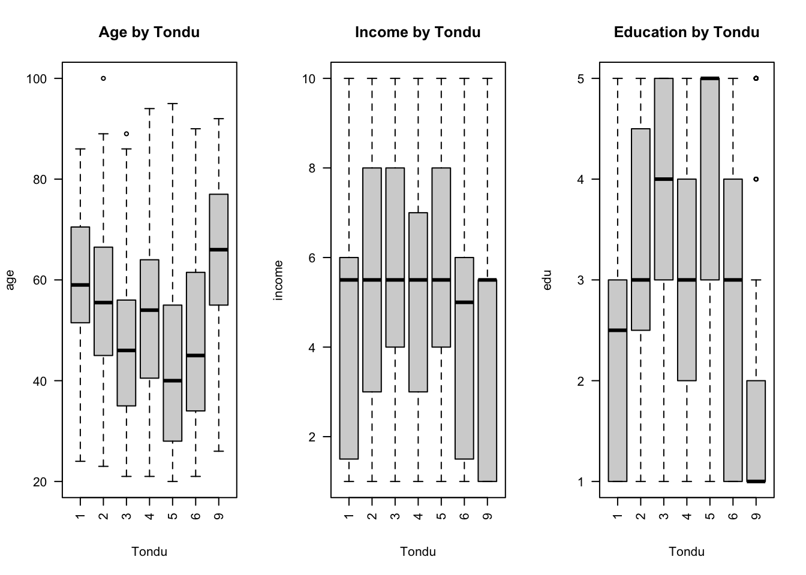
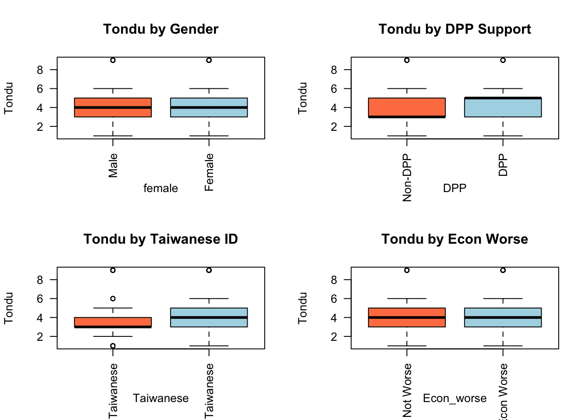
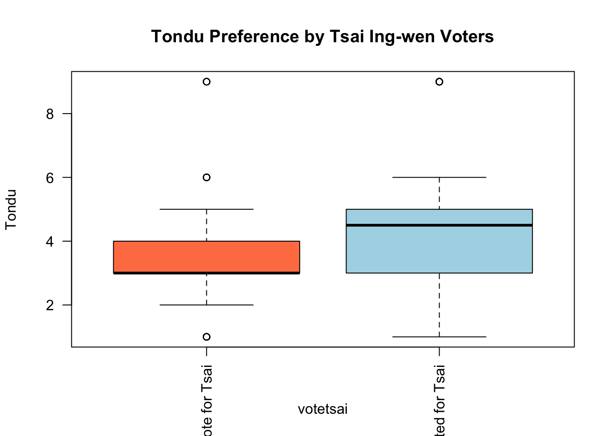
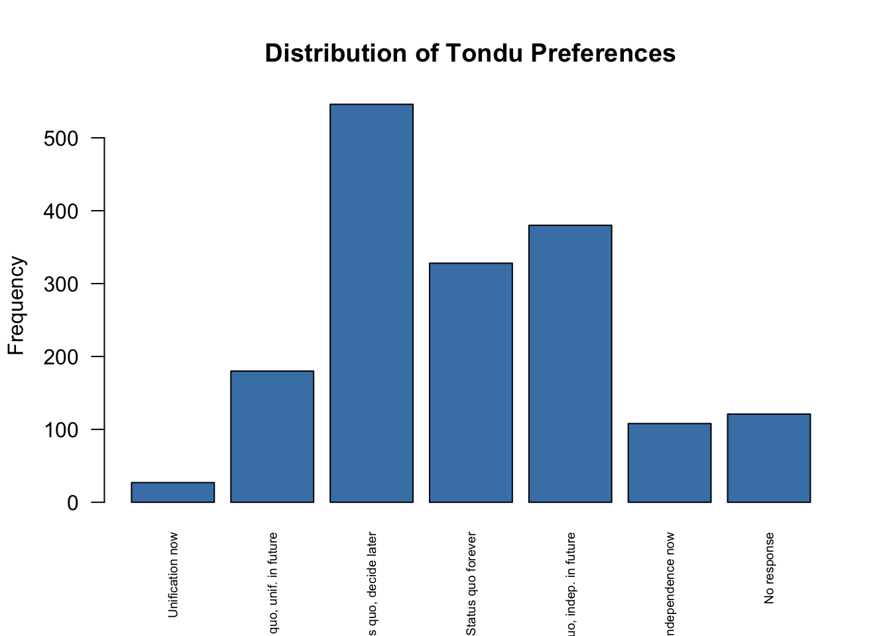

library(haven)
TEDS_2016 <- haven::read_dta("https://github.com/datageneration/home/blob/master/DataProgramming/data/TEDS_2016.dta?raw=true")Assignment 1: Brush up R and Quarto
Overview
For this assignment, I reviewed basic R programming, practiced Quarto, and completed an exploratory data analysis using the TEDS_2016 dataset.
Lab Files
Load the Dataset
Initial Inspection
# Check dimensions of the dataset
dim(TEDS_2016)[1] 1690 54# Summarize only the variables needed for the assignment
summary(TEDS_2016[c("Tondu", "votetsai", "female", "DPP", "age", "income", "edu", "Taiwanese", "Econ_worse")]) Tondu votetsai female DPP
Min. :1.000 Min. :0.0000 Min. :0.0000 Min. :0.0000
1st Qu.:3.000 1st Qu.:0.0000 1st Qu.:0.0000 1st Qu.:0.0000
Median :4.000 Median :1.0000 Median :0.0000 Median :0.0000
Mean :4.127 Mean :0.6265 Mean :0.4864 Mean :0.3497
3rd Qu.:5.000 3rd Qu.:1.0000 3rd Qu.:1.0000 3rd Qu.:1.0000
Max. :9.000 Max. :1.0000 Max. :1.0000 Max. :1.0000
NA's :429
age income edu Taiwanese
Min. : 20.00 Min. : 1.000 Min. :1.000 Min. :0.0000
1st Qu.: 35.00 1st Qu.: 3.000 1st Qu.:2.000 1st Qu.:0.0000
Median : 49.00 Median : 5.500 Median :3.000 Median :1.0000
Mean : 49.11 Mean : 5.324 Mean :3.301 Mean :0.6272
3rd Qu.: 61.00 3rd Qu.: 7.000 3rd Qu.:5.000 3rd Qu.:1.0000
Max. :100.00 Max. :10.000 Max. :5.000 Max. :1.0000
NA's :10
Econ_worse
Min. :0.0000
1st Qu.:0.0000
Median :1.0000
Mean :0.5544
3rd Qu.:1.0000
Max. :1.0000
Data Problems and Handling Missing Values
4. What problems do you encounter when working with the dataset?
After review of the initial summary statistics, I can identify two primary data integrity issues:
- Incorrect Data Types: The
havenpackage imports several categorical variables (such asTondu,female,DPP,edu, andincome) as continuous numeric vectors. At the same time, R calculated meaningless descriptive statistics, like means and medians, for those categories. Because R thinks these categories are just math numbers, I need to convert them into proper groups before we can build any meaningful charts. - Missing Data: The summary shows a substantial number of missing values (
NAs). Most notably, thevotetsaivariable is missing 429 observations, and theeduvariable is missing 10.
5. How to deal with missing values?
I have to be careful about how I handle missing data instead of just deleting it all at once.
It might be tempting to use a quick command like na.omit() to wipe out any row that has a missing value. However, that could be a bad idea for this dataset. The votetsai column alone is missing 429 values. If I remove every row that has a blank spot, I would throw away about 25% of the entire dataset which would shrink my sample size too much and likely skew the results.
A much better approach is to keep the data and just ignore the blank spots on a case-by-case basis. For example, when running calculations, na.rm = TRUE could be used to tell R to simply skip the missing numbers. When making charts, filters(!is.na(variable)) could be used to temporarily hide the missing data just for that specific graph. This way, I only ignore the blanks without throwing out good data from other columns.
6. Explore Relationships with Tondu
# Convert the remaining binary variables into factors for accurate plotting
TEDS_2016$female <- factor(TEDS_2016$female, labels = c("Male", "Female"))
TEDS_2016$DPP <- factor(TEDS_2016$DPP, labels = c("Non-DPP", "DPP"))
TEDS_2016$Taiwanese <- factor(TEDS_2016$Taiwanese, labels = c("Not Taiwanese", "Taiwanese"))
TEDS_2016$Econ_worse <- factor(TEDS_2016$Econ_worse, labels = c("Econ Not Worse", "Econ Worse"))
# --- Part 1: Continuous/Ordinal Variables vs. Tondu ---
# Set up a 1x3 grid to plot Age, Income, and Education side-by-side
par(mfrow = c(1, 3))
boxplot(age ~ Tondu, data = TEDS_2016, main = "Age by Tondu", col = "lightgray", las = 2)
boxplot(income ~ Tondu, data = TEDS_2016, main = "Income by Tondu", col = "lightgray", las = 2)
boxplot(edu ~ Tondu, data = TEDS_2016, main = "Education by Tondu", col = "lightgray", las = 2)
# --- Part 2: Categorical Variables vs. Tondu ---
# Set up a 2x2 grid to plot the binary variables
# Note: R automatically generates spineplots when plotting two factors against each other
par(mfrow = c(2, 2))
plot(Tondu ~ female, data = TEDS_2016, main = "Tondu by Gender", col = c("coral", "lightblue", "lightgreen", "gold", "plum", "cyan", "gray"), las = 2)
plot(Tondu ~ DPP, data = TEDS_2016, main = "Tondu by DPP Support", col = c("coral", "lightblue", "lightgreen", "gold", "plum", "cyan", "gray"), las = 2)
plot(Tondu ~ Taiwanese, data = TEDS_2016, main = "Tondu by Taiwanese ID", col = c("coral", "lightblue", "lightgreen", "gold", "plum", "cyan", "gray"), las = 2)
plot(Tondu ~ Econ_worse, data = TEDS_2016, main = "Tondu by Econ Worse", col = c("coral", "lightblue", "lightgreen", "gold", "plum", "cyan", "gray"), las = 2)
# Reset the plot grid back to default (1x1) for any future charts
par(mfrow = c(1, 1))7. What methods would you use?
The methods I chose depend entirely on the type of data being compared to Tondu. Since Tondu is a categorical variable broken into seven distinct groups, I can’t just run a standard numeric correlation. Instead, I split my approach based on the variables:
- For continuous variables (
age,income,edu): I used boxplots. This makes it easy to visually compare the median and the spread of the data across the differentTondupreference groups. - For categorical variables (
female,DPP,Taiwanese,Econ_worse): I used spineplots (which R generates by default when asked to plot two factors against each other). This lets me easily see the proportions ofTondupreferences within each specific group.
8. How about the votetsai variable?
The votetsai variable tracks whether the respondent voted for the DPP candidate, Tsai Ing-wen. Just like the other binary variables, I have to convert it into a factor first so R knows it is a category.
As I found during the initial data inspection, this variable is missing 429 values. But the good news is that by plotting it as a factor against Tondu, R will automatically ignore those missing (NA) values just for this specific chart, meaning I don’t have to remove any rows from our overall dataset.
# Convert votetsai to a factor with distinct labels
TEDS_2016$votetsai <- factor(TEDS_2016$votetsai, labels = c("Did not vote for Tsai", "Voted for Tsai"))
# Plot Tondu by votetsai
plot(Tondu ~ votetsai, data = TEDS_2016,
main = "Tondu Preference by Tsai Ing-wen Voters",
col = c("coral", "lightblue", "lightgreen", "gold", "plum", "cyan", "gray"),
las = 2)
9. Frequency Table and Barchart of Tondu
[cite_start]Finally, I need to generate a frequency table and a barchart for the main variable, Tondu. [cite_start]Before I can do that, I must assign the proper text labels to the numeric codes provided in the dataset.
[cite_start]While the assignment instructions suggest using as.numeric(), standard R graphics require the variable to be converted into a factor to properly display text labels on a barchart.
# Assign categorical labels to the Tondu variable
TEDS_2016$Tondu <- factor(TEDS_2016$Tondu,
levels = c(1, 2, 3, 4, 5, 6, 9),
labels = c("Unification now",
"Status quo, unif. in future",
"Status quo, decide later",
"Status quo forever",
"Status quo, indep. in future",
"Independence now",
"No response"))
# Convert the table to a data frame and format it clearly for HTML
tondu_freq <- as.data.frame(table(TEDS_2016$Tondu))
knitr::kable(tondu_freq, col.names = c("Tondu Preference", "Frequency"))| Tondu Preference | Frequency |
|---|---|
| Unification now | 27 |
| Status quo, unif. in future | 180 |
| Status quo, decide later | 546 |
| Status quo forever | 328 |
| Status quo, indep. in future | 380 |
| Independence now | 108 |
| No response | 121 |
# Generate the barchart
barplot(table(TEDS_2016$Tondu),
main = "Distribution of Tondu Preferences",
ylab = "Frequency",
col = "steelblue",
las = 2, # Rotates x-axis labels to be vertical
cex.names = 0.6) # Shrinks label text so it doesn't get cut off